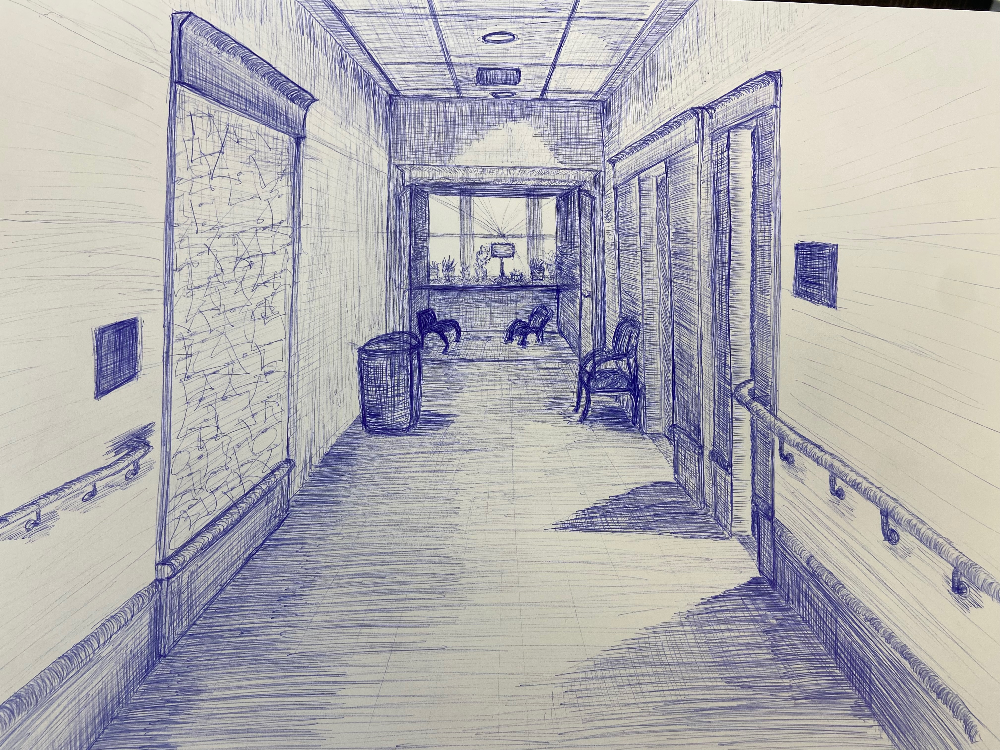

Large drawing of my favorite place to study at Macalester College, in the most historic building on campus, Old Main. This space is full of plants and the chair I sat in to make this drawing looks out over a large window at all the students passing by one of the most central parts of campus.
This was an assignment in perspective from my Drawing I course from the fall of my junior year of college.
